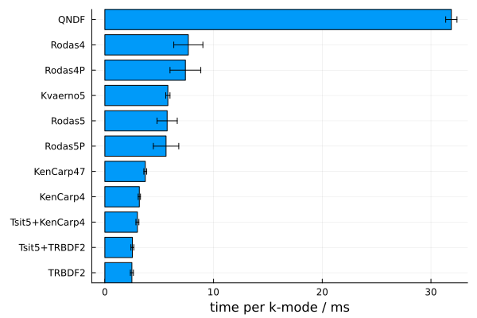

Performance and benchmarks
Linear algebra backend
By default, SymBoltz uses implicit ODE solvers to integrate stiff equations. Unlike explicit solvers, they are often bottlenecked by linear algebra operations on the Jacobian matrix at every time step. Choosing an optimal BLAS library can therefore improve performance over the default OpenBLAS backend. If your platform supports it, it is recommended to switch to an alternative linear algebra backend, like MKL or AppleAccelerate.
BLAS uses multi-threading to parallellize linear algebra operations. SymBoltz uses multi-threading to parallellize the integration of different perturbation modes. These can conflict. For best performance it is recommended to restrict BLAS to a single thread.
ODE solver
using SymBoltz, OrdinaryDiffEq, BenchmarkTools, Plots
M = SymBoltz.ΛCDM(ν = nothing, K = nothing, h = nothing)
pars = SymBoltz.parameters_Planck18(M) # TODO: much faster if i set ΩΛ0 explicitly?
prob = CosmologyProblem(M, pars)
ks = 10 .^ range(-1, 4, length = 100)
algs = [TRBDF2(), AutoTsit5(TRBDF2()), KenCarp4(), AutoTsit5(KenCarp4()), KenCarp47(), Kvaerno5(), Rodas5P(), Rodas5(), Rodas4(), Rodas4P(), QNDF()]
solve_with(alg) = solve(prob, ks; ptopts = (alg, reltol = 1e-5), thread = false)
timings = map(algs) do alg
return @benchmark solve_with($alg)
end
# Sort by efficiency
idxs = sortperm(map(t -> mean(t.times), timings))
algs, timings = algs[idxs], timings[idxs]
bar(
SymBoltz.algname.(algs),
map(t -> mean(t.times/length(ks))/1e6, timings),
yerror = map(t -> std(t.times/length(ks))/1e6, timings),
ylabel = "time per k-mode / ms", label = false,
permute = (:x, :y) # make bar plot horizontal
)
ODE solver options
bgsol = @btime solvebg(prob.bg) 14.640 ms (9552 allocations: 484.00 KiB)ptsol = @btime solvept(prob.pt, bgsol, ks, prob.var2spl; alg = SymBoltz.KenCarp4(autodiff = true), reltol = 1e-8) 415.365 ms (619825 allocations: 82.65 MiB)ptsol = @btime solvept(prob.pt, bgsol, ks, prob.var2spl; alg = SymBoltz.KenCarp4(autodiff = false), reltol = 1e-8) 417.106 ms (619828 allocations: 82.65 MiB)ptsol = @btime solvept(prob.pt, bgsol, ks, prob.var2spl; alg = SymBoltz.KenCarp4(linsolve = SymBoltz.LUFactorization()), reltol = 1e-8) 414.281 ms (619728 allocations: 82.63 MiB)ptsol = @btime solvept(prob.pt, bgsol, ks, prob.var2spl; alg = SymBoltz.KenCarp4(linsolve = SymBoltz.KrylovJL_GMRES()), reltol = 1e-8) 1.555 s (1046715 allocations: 67.92 MiB)ptsol = @btime solvept(prob.pt, bgsol, ks, prob.var2spl; alg = SymBoltz.KenCarp47(), reltol = 1e-8) 446.264 ms (619901 allocations: 91.05 MiB)ptsol = @btime solvept(prob.pt, bgsol, ks, prob.var2spl; alg = SymBoltz.KenCarp47(linsolve = SymBoltz.KrylovJL_GMRES(rtol = 1e-3, atol = 1e-3)), reltol = 1e-8) 916.258 ms (1060205 allocations: 68.69 MiB)